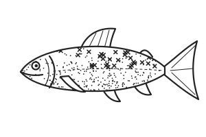
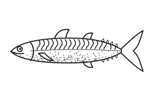
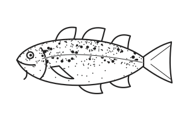
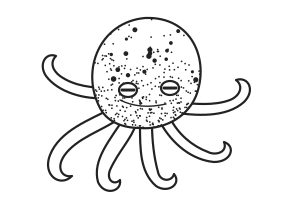
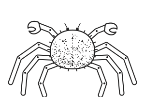
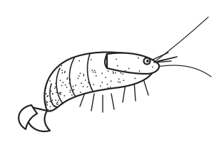
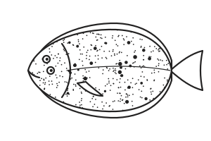
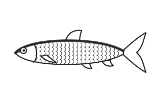
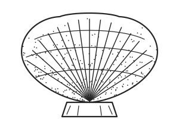
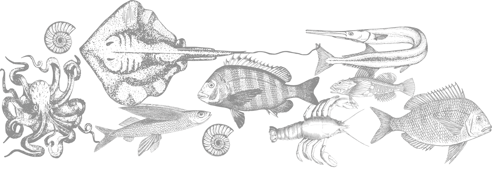

Лосось на сковороді з лимоном і кропом
Хрустка шкірка, соковите філе та вершково-лимонний соус.

Щоб зловити коричневих крабів, вам знадобиться хіба що ліхтарик і швидка реакція — останнє, що бачать коричневі краби, це спалах і стрімка рука. Але діяти треба швидко: за секунду-дві краб розуміє, що відбувається, і пускає в хід клешні. Тож ловля крабів не лише забезпечує смачну їжу, а й дарує викид адреналіну.

Норвезький атлантичний лосось росте в холодній, чистій воді фіордів, де сильні течії постійно оновлюють воду. Риба багато рухається, тому м’ясо виходить щільним, а характерний оранжево-рожевий колір і ніжний маслянистий смак роблять його універсальним: лосось чудовий сирим у суші, малосольним, копченим, запеченим або на грилі.

Восени, після літнього нагулу в Норвезькому морі, скумбрія особливо жирна — до 30% жиру. Саме тоді її й ловлять. Норвезьку скумбрію легко впізнати за мерехтливою спинкою з темними хвилястими смугами. Вона чудова копченою, смаженою на сковороді або запеченою з овочами.

Щозими арктична тріска пропливає понад тисячу кілометрів із Баренцового моря до Лофотенських островів на нерест. Таку тріску називають «скрей» — «мандрівниця». Довгий шлях робить її м’ясо особливо щільним, білим і шаруватим. Скрей — один із найцінніших сезонних продуктів Норвегії.

Восьминіг із холодних північних вод має солодкуватий смак і пружну, але ніжну текстуру. Ми постачаємо його вже очищеним і замороженим одразу після вилову, щоб зберегти якість. Восьминіг чудово підходить для гриля, салатів і середземноморських страв — достатньо правильно відварити його перед обсмажуванням.

Королівський краб — справжній велетень: розмах його лап може перевищувати півтора метра, а вага — сягати 10 кілограмів. Його ловлять пастками в крижаних водах Фіннмарка, на самій півночі Норвегії. М’ясо з лап солодке, соковите й ніжне — його достатньо просто розігріти й подати з вершковим маслом і лимоном.

Північні креветки ростуть повільно в дуже холодній воді, тому вони менші за тропічні, але помітно солодші й ароматніші. Креветки варять просто на борту судна в морській воді й одразу заморожують. У Норвегії їх їдять просто: на свіжому хлібі з майонезом і часточкою лимона.

Атлантичний палтус — найбільша камбалоподібна риба: окремі особини виростають до двох метрів. Він має біле, щільне й водночас дуже ніжне м’ясо з м’яким смаком. Палтус цінують шеф-кухарі всього світу — його запікають, готують на пару або смажать стейками.

Оселедець годував норвежців століттями й досі лишається однією з найпопулярніших риб у країні. Норвезький весняно-нерестовий оселедець — великий і жирний, із насиченим смаком. Його маринують, солять, коптять і смажать, а на різдвяному столі в Норвегії він буває в десятку різних варіантів.

Норвезькі гребінці збирають вручну водолази — так зберігається морське дно, а до улову потрапляють лише великі мушлі. М’ясо гребінця солодке, з легким горіховим відтінком. Найкращий спосіб приготування — обсмажити по хвилині з кожного боку на дуже гарячій сковороді.
Гольфстрім, що несе теплу воду з Мексиканської затоки через Атлантичний океан, тече на північ уздовж норвезького узбережжя в прозору, чисту крижану воду Арктики. Це створює ідеальні умови для неймовірно багатої морської екосистеми.
Дрібна риба, велика риба, молюски та інші форми життя. Одні з них — місцеві мешканці, інші мігрують через усю земну кулю. Одні віддають перевагу холодному відкритому морю, інші живуть у тихих глибоких фіордах, захищених стіною островів і шхер. Кожен відіграє свою роль у складному й захопливому морському життєвому циклі.
Розмаїття морепродуктів із цього середовища унікальне. Це одна з головних причин, чому Норвегія є другим за величиною експортером морепродуктів у світі. І саме тому кухарі та знавці всього світу обирають морепродукти з Норвегії: вам буде складно знайти такий самий вибір і якість деінде.


Норвезькі морепродукти — це якісні морепродукти, і ми раді ними ділитися. Ось чому ними насолоджуються в усьому світі. Міжнародне значення галузі наочно демонструє той факт, що норвезькі морепродукти подорожують приблизно до 150 країн. Ми — другий за величиною експортер морепродуктів у світі.
Чудова прибережна природа Норвегії та розмаїття життя, яке вона підтримує, — основа нашого існування ще з кам’яної доби. Ми знаємо, що зобов’язані передати це майбутнім поколінням. Море — це дар, який продовжує дарувати, але лише доти, доки ми шануємо його й дбайливо ставимося до того, що нам дано.
Норвегія має одну з найпередовіших систем сталого розвитку та управління як у рибальстві, так і в аквакультурі. Це не випадковість, а систематична робота на всіх рівнях, що забезпечує безпеку споживачів і добробут риби.
Велика увага до добробуту тварин і суворі правила означають, що наші морепродукти незмінно високої якості й безпечні для споживання. Виробництво екологічно безпечне й відповідальне та залишає мінімальний слід у довкіллі.


Ви отримуєте найкращі морепродукти.
Неважливо, що це за морепродукти, — вони норвезькі, а отже, найвищої якості.
Прості страви, у яких головну роль відіграє смак норвезьких морепродуктів.
Хрустка шкірка, соковите філе та вершково-лимонний соус.
Класична північна страва для холодного сезону.
Мінімум інгредієнтів — максимум смаку.
Перші поселення на норвезькому узбережжі з’являються там, де багато риби. Наскельні малюнки того часу зображують човни та рибальство.
Вікінги беруть у далекі походи стокфіск — тріску, висушену на вітрі. Вона зберігається роками й стає першим «експортним» продуктом Норвегії.
Берген стає центром торгівлі сушеною тріскою з Лофотенських островів. Через Ганзейський союз норвезька риба розходиться по всій Європі.
Норвезькі піонери починають вирощувати атлантичного лосося в морських садках. Так народжується сучасна аквакультура.
Норвегія — другий за величиною експортер морепродуктів у світі. Щодня в 150 країнах подають мільйони норвезьких страв.
Постачаємо свіжу та заморожену продукцію ресторанам, магазинам і дистриб’юторам. Залиште заявку — менеджер зв’яжеться з вами, підбере асортимент і розрахує вартість.
У Норвегії холодно. Дуже холодно.